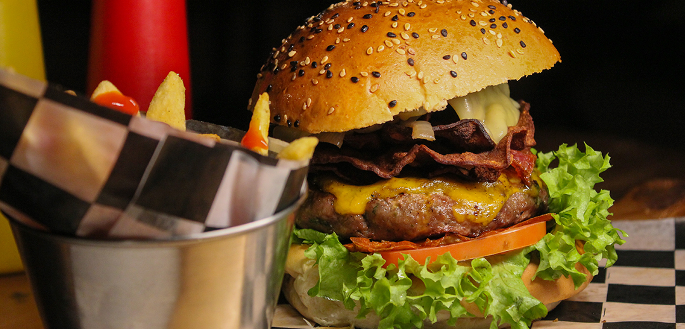

Welcome To Your favourite resturant
Welcome To Your favourite resturant
One of the things that made this restaurant special from other places is the quality of food and its distinctive method of cooking Also, the services that are found in a restaurant are many, including choosing your ingredients that you like. This restaurant also serves meals in a period of no more than 15 minutes, which makes it one of the fastest restaurants that serve meals Finally, the comfort of customers is the most important here, so we provide him with all means of comfort while waiting for food and while eating
